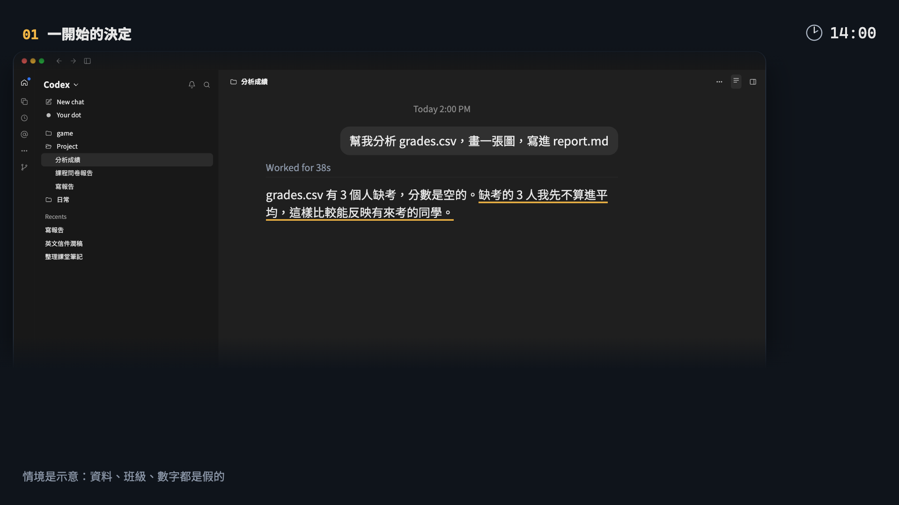
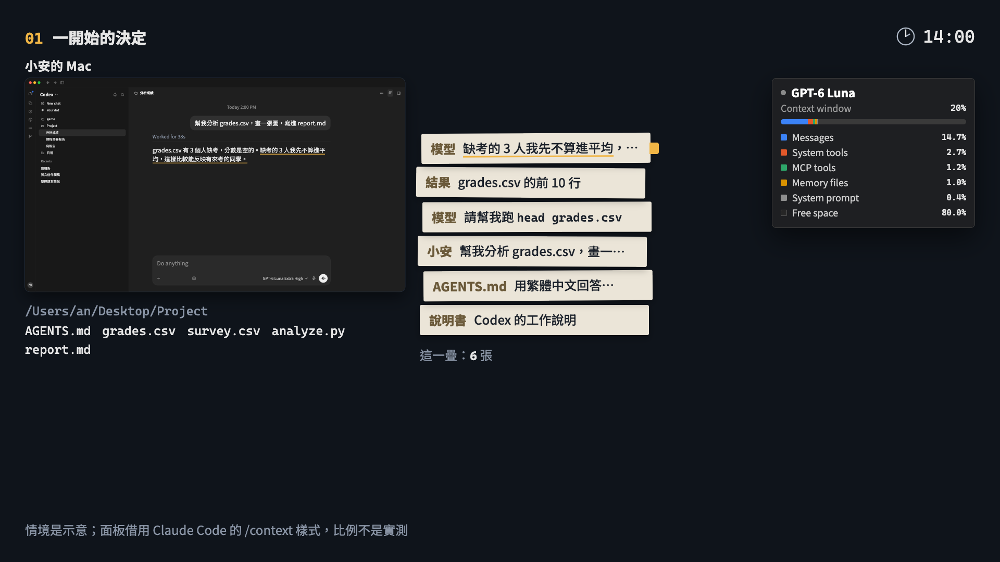
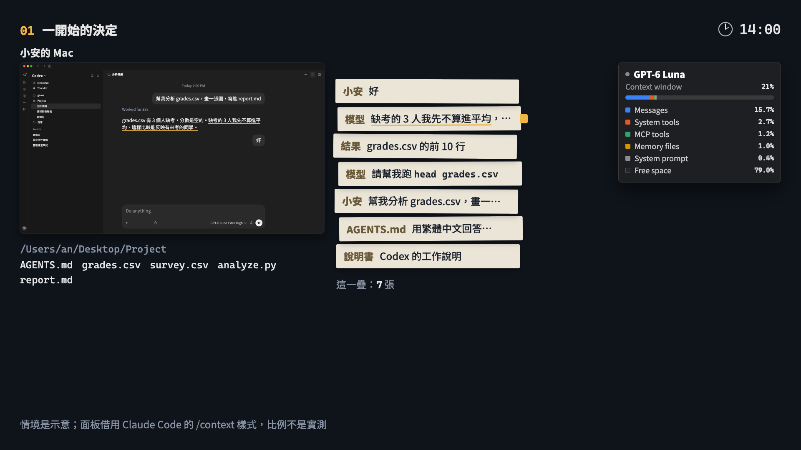
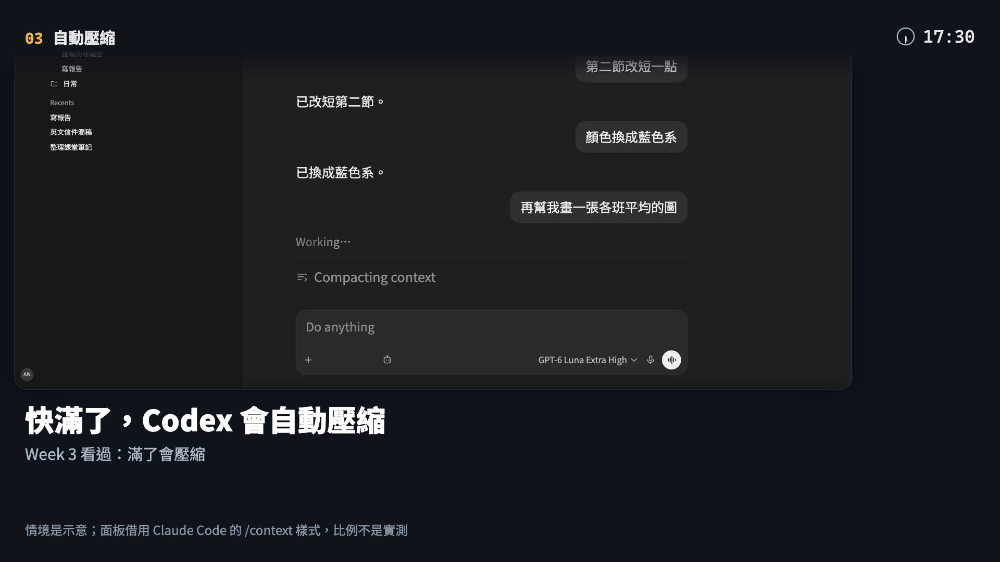
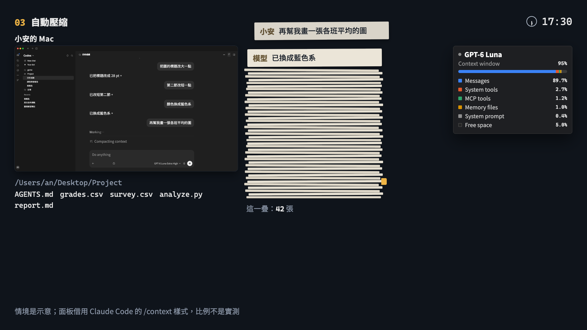
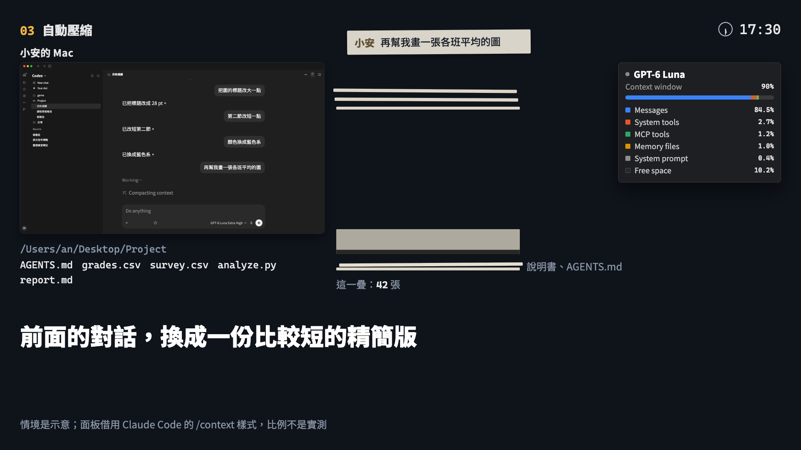
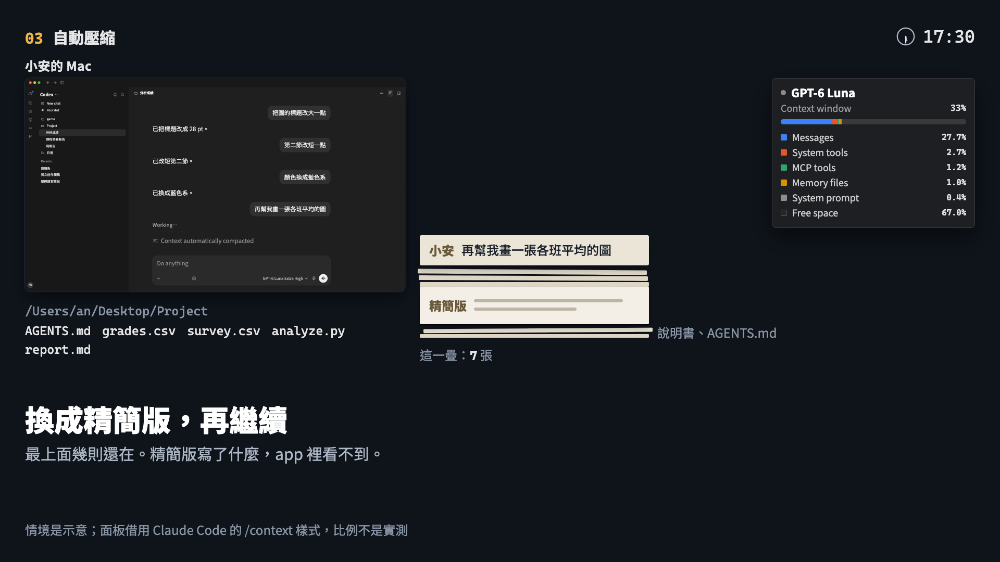
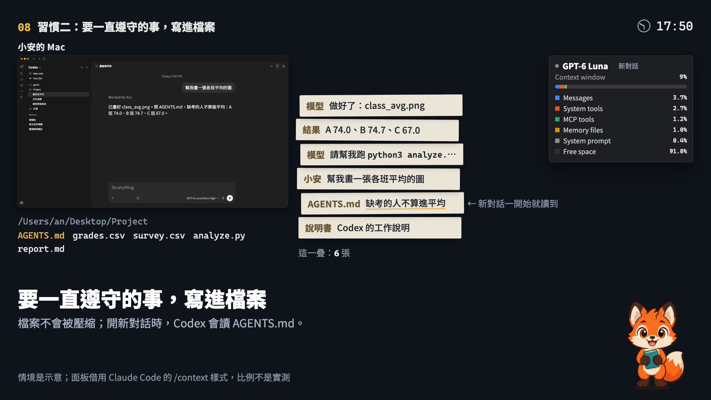

Week 5 補充教材審核
學弟交來的草稿，只給老師看：這一頁沒有任何地方連進來，也不給搜尋引擎收錄。點標題或截圖會打開那一段素材，可以播放、拖時間軸。
補充 1「按下 Enter 之後」：全部素材（檢查點 2）
10 段合計 4:10。截圖是每段的開頭、中間、結尾。
00按下 Enter14 秒｜成片 0:00–0:14
小安打字、按 Enter，快轉 30 秒，report.md 出現。「這 30 秒裡，發生了什麼？」
01腦和手20 秒｜成片 0:14–0:34
左邊小安的 Mac（手：Codex），右邊 OpenAI 的伺服器（腦：模型），中間一條網路線。
02一疊紙條26 秒｜成片 0:34–1:00
一開始三張紙條；第 1 次傳送；模型只回一張（請幫我跑…／做好了）。
03讀本地檔案28 秒｜成片 1:00–1:28
推近看 ls、head grades.csv；結果疊上去；第 2、3 次傳送；讀過的內容會送到 OpenAI。
04上網搜尋42 秒｜成片 1:28–2:10
鏡頭移到伺服器那一側：搜尋結果留在那邊，飛回來的是模型寫的紙條；你自己搜 vs Codex 搜。
05下載資料28 秒｜成片 2:10–2:38
允許提示（示意）：小安看清網址才按允許；curl 在 Mac 上跑；搜尋和下載的對比；第 4 次傳送。
06分析22 秒｜成片 2:38–3:00
寫 analyze.py、推近看 python3 analyze.py 的輸出；第 5、6 次傳送。
07寫檔案20 秒｜成片 3:00–3:20
寫出 report.md；Project 那一行加框「Codex 只在這裡面寫」；第 7 次傳送。
08越疊越高26 秒｜成片 3:20–3:46
最後一張「做好了」；18 張接到 context window 面板；工具不只這些。
09三個好習慣24 秒｜成片 3:46–4:10
三個好習慣＋「Windows 上指令名稱不一樣（PowerShell），流程一樣。」
補充 2「對話滿了會怎樣」：分鏡第 2 版＋第 3 段測試片
第 3 段「自動壓縮」30 秒，有聲音（−27 LUFS）。請聽紙張聲的大小和質感。

















我給學弟的回覆
給學弟的回覆（補充 1）
# 給學弟（補充 1 的對話）｜Week 5 補充 1｜檢查點 2（素材）的回覆 2026-10-07 老師、Claude 素材通過，做得很好。10 段的節奏、推近讀字、搜尋在伺服器那一側、允許提示、第 5 段「搜尋在 OpenAI 那邊，下載在你的電腦」的對照、第 8 段接到面板，都清楚又好看。第 6 段 analyze.py 的輸出先埋下「缺考 3 人不算進平均」，剛好接到補充 2，很好。 下面幾個小地方改完，就可以接成整支，交檢查點 3。 ## 你問的 7 件事 1. **「Created analyze.py」「Created report.md」：** 可以，算示意。 2. **單一指令也寫「Ran commands」：** 可以，跟截圖一致。 3. **允許提示用中文：** 可以，旁邊已標示意。 4. **個資和 grades.csv 的矛盾：** 這點抓得很好，但不要用「這是假資料」帶過，改成教學生怎麼做： - 字幕第二行改成：「姓名、學號這類個資，先拿掉或換成代號，再放進專案資料夾」。 - 小字：「這裡的 grades.csv 用的就是代號（S01…）」。 - 這門課本來就要分析學生資料，所以重點是「去識別化再放進去」，不是「不要放」。PLAN 第 3 段和驗收清單都已經改了。 5. **面板字 18–22 px：** 維持和影片 01 一樣。 6. **第 4 段比較表：** 成片時再看。每一列出現後至少停 4 秒，整張表出齊後再停 5 秒以上；不夠就加時間。 7. **對話字放大到 30 px：** 可以。 ## 另外要改的兩個小地方 1. **第 8 段字幕：** 「每一個工具的結果，都疊進了 context window」改成「每一步的結果，都疊進了 context window」。搜尋的原始結果我們畫成留在伺服器那一側，所以不能說「每一個工具的結果」都疊進來。 2. **第 5 段游標：** 字幕叫大家「先看清楚它要連去哪」的時候，游標正好蓋在網址上（`example.org/`）。請讓游標先停在提示框外面，等網址的琥珀底線畫完、停一下，再移到「允許」。 ## 下一步 - 改完上面幾點，就接成整支、配音樂和音效（−27 LUFS、不用咻咻聲），交檢查點 3：`out/s1-codex-loop.mp4`，附上照 PLAN 驗收清單自己逐條檢查的結果。 - 補充 2 會沿用你的紙條、Codex 視窗和面板。這幾個元件之後如果還有改，請在 PROGRESS.md 記一行「改了什麼」，補充 2 才對得齊。
給學弟的回覆（補充 2）
# 給學弟（補充 2 的對話）｜Week 5 補充 2｜分鏡第 2 版＋第 3 段測試片的回覆 2026-10-07 老師、Claude 分鏡第 2 版通過，6 個地方都改對了。底部的「說明書」「AGENTS.md」、決定那張先停在最上面再被「好」蓋住、第 8 段琥珀線回到 AGENTS.md，整條線很清楚。第 3 段測試片的動態也很好：−27.1 LUFS，留下的三張和新訊息的順序都看得懂。 ## 補充 1 的素材檢查點過了，可以開始做全部素材 - 補充 1 的素材在 `week05-s1-codex-loop/materials/`（`common/loop.js`、`loop.css`、`scenes/`）。紙條、Codex 視窗、面板、小安、允許提示的樣子都以它為準。只讀，複製到你的專案再用。 - 補充 1 還有幾個小修改：字幕、游標，不影響共用的元件。之後那邊如果改了共用元件，會記在它的 `PROGRESS.md`。 - 假資料照舊讀 `week05-s1-codex-loop/source/data/grades.csv`。 ## 你問的 4 件事 1. **提早改用補充 1 的紙條畫法：** 照你的做法。現在補充 1 過關了，再對齊一次它的正式版本。 2. **留下的三則畫成紙邊：** 可以，維持紙邊。請確認動畫裡看得出「就是剛才浮在上面的那三張」。 3. **第 0 段面板只畫外框、不顯示百分比：** 可以。 4. **19–27 秒停太久：** 縮短 2–3 秒，時間讓給第 4 段。 ## 另外一個小地方 測試片大約 8 秒，鏡頭從推近拉回來的那幾格，放大的紙條堆會蓋過右上角的時鐘。請讓段落標和時鐘一直在最上層，或讓紙條堆在拉回時先淡一點。 ## 聲音 老師會親自聽測試片，聽完再回覆紙張聲要大一點、小一點，還是換質感。在那之前先照現在的做，不用等。 ## 下一步 做全部 10 段素材（`materials/index.html`，每頁截開頭、中間、結尾三張），交檢查點 2。
Copyright © 2026 JUNHAO CHEN